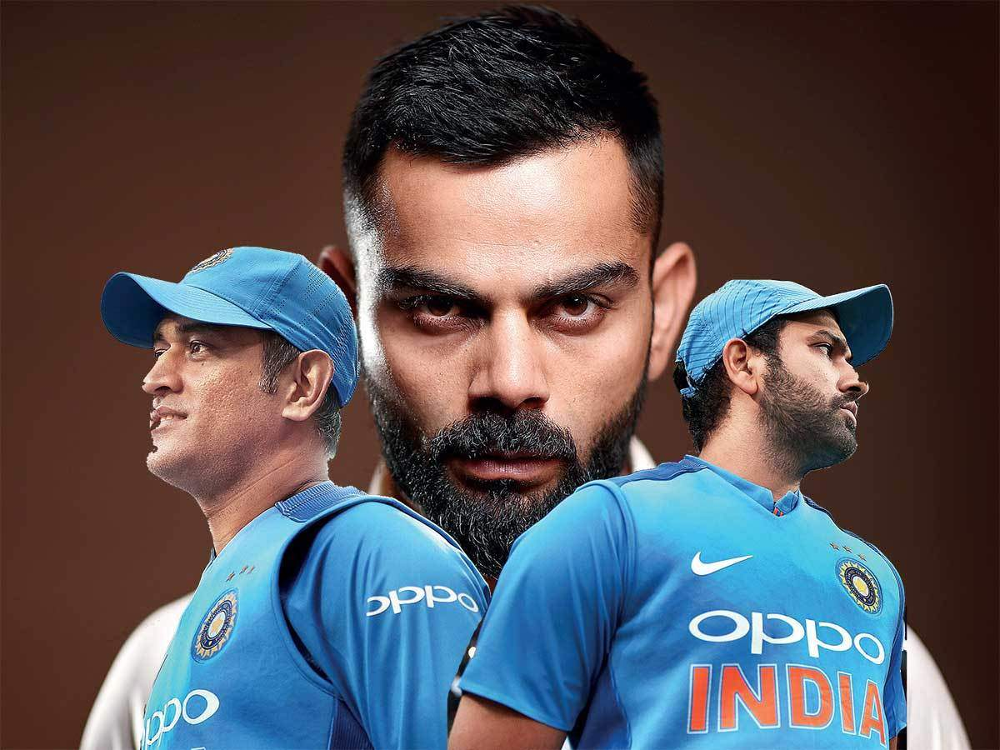

Virat Kohli — The Chase Master
A look at Virat Kohli's journey from a young prospect to one of the most consistent run-scorers in modern cricket, his intensity on the field, and his impact as a former Indian captain.
Read More →Stories of the players who redefined Indian cricket

Welcome to Blog Post Of Three Cricket Legend— a small tribute to three players who shaped a generation of Indian cricket fans: Virat Kohli, Rohit Sharma, and MS Dhoni. Each of them brought something different to the game — Dhoni's calm captaincy and finishing under pressure, Kohli's relentless intensity and record-breaking consistency, and Rohit's elegant batting and leadership as India's current captain. This blog is my way of documenting their journeys, achievements, and impact on the sport, as someone who's followed their careers as a fan.
A look at Virat Kohli's journey from a young prospect to one of the most consistent run-scorers in modern cricket, his intensity on the field, and his impact as a former Indian captain.
Read More →Exploring Rohit Sharma's elegant batting style, his record-breaking innings as an opener, and his calm leadership as India's current captain.
Read More →Remembering MS Dhoni's iconic finishing ability, his composed captaincy through India's biggest wins, and his lasting legacy as a wicketkeeper-batsman.
Read More →